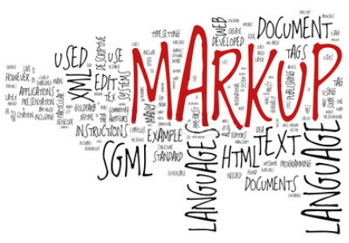

Markup languages are one of the important and most used front-end language. It is for better representation of text digitally. These languages make a structured form of the digital document. The markup language uses tags to define each one of the specified formats within the document. Usually, each tag has an opening tag and a closing tag. The most common markup language is HTML used to make structured web pages.
WHAT IS A MARKUP LANGUAGE?
As you begin exploring the world of web design, you will undoubtedly be introduced to a number of words and phrases that are new to you. One of the terms that you will likely hear is "markup" or perhaps "markup language". How is "markup" different than "code" and why do some web professionals seem to use these terms interchangeably? Let's start by taking a look at exactly what a "markup language is."
Markup languages are designed for the processing definition and presentation of text. The language specifies code for formatting, both the layout and style, within a text file. The code used to specify the formatting are called tags. HTML is a an example of a widely known and used markup language

MARKUP LANGUAGE IN TECHNICAL TERMS
A markup language is a computer language that uses tags to define elements within a document. It is human-readable, meaning markup files contain standard words, rather than typical programming syntax. While several markup languages exist the two most popular are HTML and XML.
A computer language that consists of easily understood keywords, names, or tags that help format the overall view of a page and the data it contains.
MARKUP LANGUAGE IS NOT A PROGRAMMING LANGUAGE
A markup language is not a programming language it is a series of keywords, names, and tags that are used to help present information. A programming language cannot only present information, but also accept and load new data, manipulate the data, and control how the information is presented.
A good example of how markup language is used is the HTML that is used to display the text on this web page. However, to do something more sophisticated, such as a search for keywords on this page and other pages, a programming language would have to be used.
LET'S LOOK AT 3 MARKUP LANGUAGES
Nearly every acronym on the Web that has an “ML” in it is a “markup language” (big surprise, that is what the "ML" stands for). Markup languages are thebuilding blocks used to create web pages or all shapes and sizes.
In realtiy, there are many different markup languages out there in the world. For web design and development, there are three specific markup languages that you will likely run across. These are:
HTML
XML
XHTML
CODE:
<!DOCTYPE html>
<html lang="en">
<head>
<meta charset="utf-8">
<title> Markup Languages </title>
</head>
<body>
<header>
<h1> LEARN TECH HERE <br />
ALL ABOUT COMPUTER LANGUAGES</h1>
<img src="header.jpg" alt="tech" width="1200" height="200" />
</header>
<nav>
<ul>
<li><a href="main.html"> Home </a></li>
<li><a href="file1.html">Programming Languages </a>
<ul>
<li><a href="file6.html">JAVA</a></li>
</ul>
</li>
<li><a href="file4.html"> Scripting Languages</a>
<ul>
<li><a href="file7.html">JavaScript</a></li>
</ul>
</li>
<li><a href="file5.html"> Markup Languages</a>
<ul>
<li><a href="file8.html">HTML </a></li>
</ul>
</li>
<li><a href="file2.html"> About Us </a></li>
<li><a href="file3.html"> Contact Us </a></li>
</ul>
</nav>
<!-- Using Blockquote and CIte tag-->
<h1> MARKUP LANGUAGES </h1>
<blockquote cite="https://nibbleview.com/all-about-computer-languages-and-its-types/">
<cite> Markup languages are one of the important and most used front-end language. It is for better representation of text digitally. These languages make a structured form of the digital document. The markup language uses tags to define each one of the specified formats within the document. Usually, each tag has an opening tag and a closing tag. The most common markup language is HTML used to make structured web pages. </cite>
</blockquote>
<h2> WHAT IS A MARKUP LANGUAGE? </h2>
<p> As you begin exploring the world of <strong><em>web design,</em></strong> you will undoubtedly be introduced to a number of words and phrases that are new to you. One of the terms that you will likely hear is <strong><em>"markup"</em></strong> or perhaps <strong><em>"markup language"</em></strong>. How is "markup" different than <strong><em>"code"</em></strong> and why do some web <strong><em>professionals</em></strong> seem to use these terms interchangeably? Let's start by taking a look at exactly what a <strong><em>"markup language is."</em></strong>
<br />
Markup languages are <strong><em>designed</em></strong> for the <strong><em>processing</em></strong> definition and presentation of <strong><em>text</em></strong>. The language specifies code for <strong><em>formatting, both the layout and style,</em></strong> within a <strong><em>text file</em></strong>. The code used to specify the formatting are called <strong><em>tags</em></strong>. <strong><em>HTML</em></strong> is a an <strong><em>example</em></strong> of a widely known and used <strong><em>markup language</em></strong>
</p>
<h2> MARKUP LANGUAGE IN TECHNICAL TERMS </h2>
<p> A markup language is a computer language that uses tags to define <strong><em>elements</em></strong> within a <strong><em>document</em></strong>. It is <strong><em>human-readable</em></strong>, meaning markup files contain standard words, rather than typical programming <strong><em>syntax</em></strong>. While several markup languages <strong><em>exist</em></strong> the two most <strong><em>popular</em></strong> are <strong><em>HTML</em></strong> and <strong><em>XML</em></strong>.
A computer language that consists of easily understood <strong><em>keywords, names, or tags</em></strong> that help format the overall <strong><em>view</em></strong> of a page and the <strong><em>data</em></strong> it contains.</p>
<!-- Using <del> and <ins> tag-->
<h2> MARKUP LANGUAGE IS NOT A <del>PROGRAMMING LANGUAGE</del> </h2>
<p> A markup language is not a <del>programming language</del> <ins>it is a series of keywords, names, and tags</ins> that are used to help present information. A programming language cannot only present information, but also accept and load new data, manipulate the data, and control how the information is presented. <br />
A good example of how markup language is used is the HTML that is used to display the text on this web page. However, to do something more sophisticated, such as a search for keywords on this page and other pages, a programming language would have to be used. </p>
<h2> LET'S LOOK AT 3 MARKUP LANGUAGES </h2>
<p>Nearly every <strong><em>acronym</em></strong> on the Web that has an “ML” in it is a “markup language” (big surprise, that is what the "ML" stands for). Markup languages are the<strong><em>building blocks</em></strong> used to create web pages or all <strong><em>shapes and sizes.</em></strong> <br />
In <strong><em>realtiy</em></strong>, there are many different markup languages out there in the <strong><em>world</em></strong>. For web design and development, there are three specific markup languages that you will likely run across. These are:</p>
<ol type="I">
<li> HTML </li>
<li> XML </li>
<li> XHTML </li>
</ol>
<!-- Using Iframe embedded video-->
<iframe width="560" height="315" src="https://www.youtube.com/embed/D90sv5tzHcY" allow="accelerometer; autoplay; encrypted-media; gyroscope; picture-in-picture" allowfullscreen></iframe>
<h3> CODE: </h3>
<progress max="100" value="70" >
</progress>
<br>
<br>
<br>
<br>
<footer> Copyright@LearnTechHere2018 </footer>
</body>
</html>